텔레마케팅관리사 (2021-03-07 기출문제)
1과목: 판매관리
1. 광고보다 인적판매가 더 유리한 경우는?
- 기능설명이 필요한 고가의 제품
- 고객의 수가 많음
- 고객이 지역적으로 분산되어 있음
- 표준화된 제품
(정답률: 86%)

2. 인바운드 고객 상담은 신속한 고객 응대를 위해 다양한 기술을 많이 활용하게 된다. 인바운드 고객 상담을 위해 사용되는 CTI(Computer Telephony Integration)기술이 현재 제공하는 기능이 아닌 것은?
- 고객의 성향에 대한 분석
- 컴퓨터를 통한 전화 걸기
- 전화 건 사람의 전화번호 인식
- 고객에 대한 정보를 불러와서 스크린에 보여주기
(정답률: 59%)
3. 효과적인 시장세분화의 조건으로 틀린 것은?
- 세분시장은 정보의 측정 및 획득이 용이해야 한다.
- 세분시장에 효과적으로 접근할 수 있는 적절한 수단이 존재해야 한다.
- 세분시장 사이에 차별적인 반응(differentiability)이 나오지 않도록 주의해야 한다.
- 각 세분시장은 기업이 개별적인 마케팅 프로그램을 실행할 수 있을 정도로 충분한 규모를 지니고 있어야 한다.
(정답률: 73%)
4. 제품에 관한 설명 중 틀린 것은?
- 편의품은 포장이 중요하다.
- 전문품이 편의품보다 점포수가 더 필요하다.
- 전문품의 이익 폭은 편의품보다 높다.
- 전문품은 제한적인 유통경로를 택하는 경우가 많다.
(정답률: 76%)
5. 특정 계층의 시청자들이 자주 보는 케이블 TV를 이용하여 광고했을 때 가장 효과를 볼 수 있는 제품의 종류는?
- 전문품
- 편의품
- 선매품
- 비탐색품
(정답률: 44%)
6. 다음 ( )에 알맞은 유통경로는?
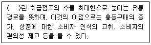
- 통제적 유동경로
- 개방적 유통경로
- 선택적 유통경로
- 전속적 유통경로
(정답률: 81%)
7. 인바인드 상담 절차를 바르게 나열한 것은?
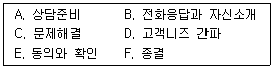
- A → C → D → B → E → F
- D → A → C → B → E → F
- A → B → D → C → E → F
- A → D → B → C → E → F
(정답률: 87%)
8. 광고효과의 측정 방법이 아닌 것은?
- 식별 측정(recognition measure)
- 과업기준 측정(task-based measure)
- 기억 측정(recall measure)
- 구매행위 측정(purchase measure)
(정답률: 56%)
9. 텔레마케팅을 통한 고객의 구매 만족도 및 구매 성공 가능성에 영향을 미치는 요인 중 배송과 관련된 마케팅 믹스는?
- 제품
- 가격
- 유통
- 촉진
(정답률: 80%)
10. 다음이 설명하고 있는 마케팅 분석방법은?
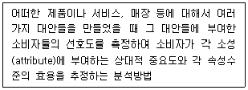
- 군집 분석
- 요인 분석
- 컨조인트 분석
- 판별 분석
(정답률: 43%)
11. 인구통계학적 변수로 거리가 먼 것은?
- 연령
- 성격
- 성별
- 소득
(정답률: 71%)
12. 포지셔닝 전략의 유형에 관한 설명으로 옳지 않은 것은?
- 제품속성에 의한 포지셔닝은 자사 브랜드를 주요 제품속성이나 편익과 연계하는 것이다.
- 제품군에 의한 포지셔닝은 자사 제품을 대체 가능한 다른 제품군과 연계하여 소비자의 제품전환을 유도 하는 것이다.
- 제품 사용자에 의한 포지셔닝은 제품을 특정 사용 자나 사용자계층과 연계하는 것이다.
- 범주 포지셔닝은 제품을 그 사용상황에 연계하는 것이다.
(정답률: 36%)
13. 상황분석의 일반적인 외적 요인으로 옳지 않은 것은?
- 경쟁상태
- 기술의 진보
- 소비자의 수요
- 부서의 목표
(정답률: 72%)
14. 소비자의 구매 과정에서 욕구 발생에 영향을 주는 내적 변수가 아닌 것은?
- 소비자의 동기
- 소비자의 특성
- 소비자의 과거 경험
- 과거의 마케팅 자극
(정답률: 60%)
15. 잠재시장을 평가할 때 마케팅 관리자가 검사해야 할 사항으로 거리가 가장 먼 것은?
- 시장의 규모
- 시장의 위치
- 2차 자료 수집방법
- 시장세분화의 적합한 기준
(정답률: 64%)
16. 마케팅조사시스템에 관한 설명으로 옳지 않은 것은?
- 마케팅조사는 당면한 마케팅문제의 해결에 직접적 으로 관련된 1차 자료를 수집하기 위해 주로 도입된다.
- 마케팅 의사결정에 유용한 정보의 수집은 체계적, 객관적으로 수집되어야 한다.
- 마케팅조사는 마케팅 의사결정에 유용한 정보만을 제공하여 마케팅문제의 해결에 도움을 주어야 한다.
- 마케팅조사과정은 조사설계→조사목적의 결정→자료수집과 수집된 자료의 분석 보고서 작성의 순서로 구성된다.
(정답률: 45%)
17. 아웃바운드 텔레마케팅의 성공 요인과 거리가 가장 먼 것은?
- 브랜드 품질의 확보와 신뢰성
- 탄력적인 인력배치
- 정확한 대상 고객의 선정
- 고객 니즈의 맞는 전용상품과 특화된 서비스 발굴
(정답률: 49%)
18. 아웃바운드 텔레마케팅을 활용하는 마케팅 전략이 라고 볼 수 없는 것은?
- 매스마케팅
- 1대 1 마케팅
- 다이렉트마케팅
- 데이터베이스마케팅
(정답률: 63%)
19. 다음 ( )에 알맞은 것은?
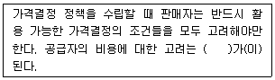
- 가격의 하한선
- 가격의 범위
- 원가경쟁
- 변동비
(정답률: 54%)
20. 인바운드 텔레마케팅의 중요성에 대한 설명으로 거리가 가장 먼 것은?
- 거래마케팅에서 관계마케팅으로의 변화에 대응
- 서비스 및 상품 이용고객의 만족 여부의 정확한 확인
- 광고, 경험, 구전 등에 의한 고객 기대가치의 대응
- 기업 서비스 향상으로 고객요구에 대한 신속한 대응
(정답률: 34%)
21. 가격결정에서 인플레율을 고려한 것으로 계약판매 및 신용판매에서 특히 고려해야 할 기준은?
- 가격 탄력성
- 가격표시제
- 가격 체인
- 가격 에스컬레이션
(정답률: 41%)
22. 다음 ( )에 들어갈 시장공략 전략을 순서대로 나열한 것은?
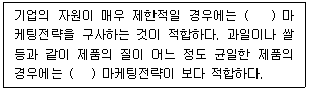
- 무차별적, 집중
- 무차별적, 차별적
- 집중, 무차별적
- 집중, 차별적
(정답률: 68%)
23. 다음에서 설명하고 있는 가격결정 방법은?
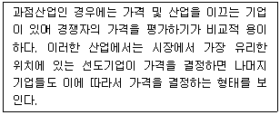
- 가격선도제
- 원가가산가격결정법
- 투자수익률가격결정법
- 관습적 가격결정법
(정답률: 76%)
24. 다음 설명에 해당하는 것은?
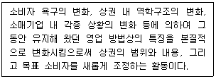
- 재포지셔닝
- 타켓마케팅
- 시장세분화
- 제품차별화
(정답률: 78%)
25. 다음 설명에 해당하는 용어는?
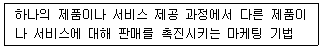
- 리피팅(Repeating)
- 업 셀링(Up-selling)
- 크로스 셀링(Cross-selling)
- 경쟁광고(Pioneering advertising)
(정답률: 68%)
2과목: 시장조사
26. 종단조사와 횡단조사의 설명으로 옳지 않은 것은?
- 동일한 현상을 동일한 대상에 대해 반복적으로 측정하는 것은 종단조사에 해당한다.
- 횡단조사는 특정 시점에서의 집단 간 차이를 연구하는 방법이다.
- 종단조사는 동태적인 성격이라 할 수 있고, 횡단조사는 정태적인 성격이라 할 수 있다.
- 종단조사는 조사대상의 특성에 따라 집단을 나누어 비교·분석하기 때문에 횡단조사에 비해 표본의 크기가 상대적으로 크다.
(정답률: 47%)
27. 시장조사를 통해 수집한 자료는 크게 1차 자료와 2차 자료로 구분할 수 있는데, 2차 자료를 통해 시장조사를 진행했을 경우에 나타나는 일반적인 문제점은?
- 자료의 시효성이 보장되지 못한다.
- 자료 수집의 경제성이 떨어진다.
- 자료 수집의 신속성이 떨어진다.
- 자료의 공공성이 없다.
(정답률: 59%)
28. 표본추출방법에 관한 설명으로 옳지 않은 것은?
- 층화표본추출은 단순무작위표본추출에 비해 표본오차가 줄고 대표성이 높아진다.
- 체계적 표본추출은 목록 자체가 일정한 주기성을 가질 경우에 바람직하다.
- 군집표본추출에서는 군집이 표본추출단위가 된다.
- 체계적 표본추출의 경우 첫 번째 표본은 반드시 무작위로 선정하여야 한다.
(정답률: 9%)
29. 인터넷 조사의 단점으로 거리가 먼 것은?
- 인터넷 사용자로 표본이 편중되는 측면이 있다.
- 조사자에 대한 관리비용이 상승한다.
- 조사에 능동적으로 응대하는 사람만 조사가 가능하여 대표성이 상실될 수 있다.
- 응답자를 정확하게 통제, 확인할 수 없다.
(정답률: 68%)
30. 일반적으로 알려진 4가지의 척도 중 절대적인 기준인 영점이 존재하고, 모든 사칙연산이 가능한 척도는?
- 명목척도
- 서열척도
- 등간척도
- 비율척도
(정답률: 56%)
31. 효과적인 전화조사를 위해 고려해야 할 사항이 아닌 것은?
- 응답자가 불편을 느끼지 않는 시간대를 선택한다.
- 전화조사 시에는 경제성을 고려하여 다양한 주제의 질문을 통하여 많은 내용을 조사한다.
- 전화조사 시 적당한 통화시간은 5분 정도이며, 10 개 전후의 문항이 적당하다.
- 전화조사는 중간에 전화가 끊어지거나 소음 등에 방해를 받지 않도록 한다.
(정답률: 74%)
32. 조사결과를 이용하는 사람이 지켜야 할 윤리로 옳은 것을 모두 고른 것은?
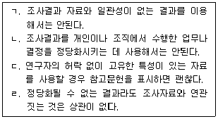
- ㄱ
- ㄱ, ㄴ
- ㄴ, ㄷ
- ㄱ, ㄴ, ㄷ, ㄹ
(정답률: 70%)
33. 시장조사를 활용한 활동으로 볼 수 있는 것은?
- 회사의 매출을 파악하기 위하여 회계자료를 분석한다.
- 회사의 규모를 파악하기 위하여 직원현황을 분석한다.
- 새로 만든 다리의 이름을 짓기 위해 주민들에게 다리 이름을 공모한다.
- 광고의 인지도를 파악하기 위해 전화조사를 실시한다.
(정답률: 51%)
34. 조사의 초기단계에서 조사에 대한 아이디어와 통찰력을 얻기 위하여 사용되는 조사로, 주로 조사문제가 명확하지 않거나 분석대상에 대한 아이디어나 가설을 얻기 위해 사용되는 조사는?
- 탐색조사
- 기술조사
- 인과관계조사
- 정량적 조사
(정답률: 60%)
35. 자료 수집을 위하여 사용하는 척도 중에서 다음의 특징을 가진 척도는?
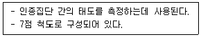
- 리커트의 척도
- 오스긋의 척도
- 보가더스의 척도
- 서스톤의 척도
(정답률: 20%)
36. 다음 중 실험연구의 장점과 거리가 가장 먼 것은?
- 변인 간의 인과관계를 증명할 수 있다.
- 연구의 결과를 일반화할 수 있다.
- 피실험자들의 개인차를 통제할 수 있다.
- 내적타당성을 확보할 수 있다.
(정답률: 37%)
37. 다음 설문지 내용 분석 시 설문지 작성 원칙에 가장 위배되는 사항은?
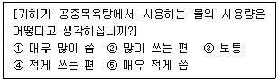
- 응답자를 비하하거나 무시하는 표현의 금지
- 응답하기 곤란한 질문을 간접적으로 질문
- 특정 사실을 가정한 질문 금지
- 유도 또는 강요하는 표현 금지
(정답률: 57%)
38. 시장조사에서 2차 자료에 관한 설명으로 틀린 것은?
- 시간과 비용이 절약된다.
- 2차 자료의 유형으로는 내부 자료와 외부자료로 구분된다.
- 2차 자료 수집방법으로는 서베이 조사법과 관찰법이 사용된다.
- 2차 자료를 활용할 경우에는 신뢰도와 타당도에 주의해야 한다.
(정답률: 59%)
39. 다음 척도의 종류는?
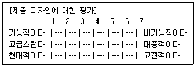
- 서스만 척도
- 리커드 척도
- 거트만 척도
- 의미분화 척도
(정답률: 24%)
40. 다음 ( )에 들어갈 조사응답자의 권리는?
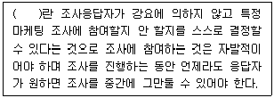
- 안전할 권리
- 참여를 선택할 권리
- 조사에 대해 알 권리
- 사생활을 보호받을 권리
(정답률: 72%)
41. 특정 상품에 대한 만족도를 측정하기 위하여 정확성이 공인된 체중계를 사용하여 체중계에 표시된 몸무게로 만족도를 측정하였다. 이러한 측정에 관하여 올바르게 나타낸 것은?
- 신뢰도는 높지만 타당도가 낮다.
- 신뢰도는 낮지만 타당도는 높다.
- 신로도와 타당도가 모두 낮다.
- 신뢰도와 타당도가 모두 높다.
(정답률: 41%)
42. 우편조사의 특징에 대한 설명으로 틀린 것은?
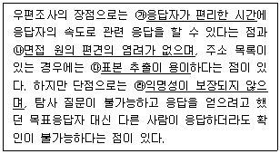
- ㉮
- ㉯
- ㉰
- ㉱
(정답률: 52%)
43. 비확률표본추출방법에 해당하는 것은?
- 군집 표본추출
- 체계적 표본추출
- 판단 표본추출
- 층화 표본추출
(정답률: 50%)
44. 다음 중 예비조사(PHot tese)가 필요한 경우가 아닌 것은?
- 설문 문항의 구성과 배열, 문맥상의 오류를 파악하여 설문지의 객관적인 타당성을 높이기 위한 경우
- 소비자가 진정으로 원하는 속성이나 편익을 제공해 주고 있어 경쟁상대가 없다고 여겨질 경우
- 제품이나 서비스 콘셉트(concept)에 대하여 소비자 로부터 정확하고 객관적인 평가를 실시하여 포지셔닝을 재설정하는 경우
- 크리에이티브와 구매제안에 대한 대안을 평가하고자 할 경우
(정답률: 10%)
45. 표본의 크기를 결정하는 요소와 가장 거리가 먼 것은?
- 모집단의 동질성
- 조사비용의 한도
- 연구자의 수
- 조사가설의 내용
(정답률: 24%)
46. 시장조사에 있어서 조사자가 지켜야 할 윤리에 대한 설명으로 옳지 않은 것은?
- 고객에 관한 정보를 경쟁기업에게 누설하지 않는다.
- 부적절한 방법으로 조사를 진행하지 않는다.
- 정보 제공자의 익명성을 보장하여야 하나.
- 조사가 끝난 후에는 입수한 자료의 비밀을 유지할 필요가 없다.
(정답률: 71%)
47. 시장조사의 과학적 연구의 특징에 해당되지 않은 것은?
- 과학은 논리적인 것이어야 한다.
- 과학은 경험적으로 검증이 가능해야 한다.
- 과학은 일반적인 이해를 추구하기 보다는 개별적인 현상을 설명하는 것이다.
- 과학은 구체적인 것이어야 한다.
(정답률: 57%)
48. 다음 자료수집방법 중 응답 정보를 가장 빨리 얻을 수 있는 것은?
- 우편조사
- 전화조사
- 심층면접조사
- 대리질문조사
(정답률: 68%)
49. 장난감 회사에서는 얼마나 많은 장난감을 바꾸거나 개선할 필요가 있는지를 알아보기 위해 실제 어린이들이 장난감을 가지고 노는 것을 살펴본다고 한다. 이러한 방법으로 수집된 자료는?
- 관찰 자료
- 설문지 자료
- 인터뷰 자료
- 인구통계적 자료
(정답률: 77%)
50. 시장조사를 위한 면접조사의 장점이 아닌 것은?
- 조사자가 필요에 따라 질문을 수정할 수 있다.
- 모호한 응답에는 재질문을 통해 명료화할 수 있다.
- 질문을 반복하거나 변경함으로써 응답자의 반응을 적절히 이해할 수 있다.
- 짧은 시간 내에 여러 사람들에게 접근할 수 있는 편리함이 있다.
(정답률: 67%)
3과목: 텔레마케팅관리
51. 텔레마케팅 특성으로 옳지 않은 것은?
- 고객의 현재가치를 중점으로 둔다.
- 시간, 공간, 거리의 장벽을 극복한다.
- 기업을 정보창조 조직으로 변모시킨다.
- 구성요소가 유기적으로 결합된 시스템에 의해 움직인다.
(정답률: 35%)
52. 콜센터 리더가 갖추어야 할 리더십으로 거리가 가장 먼 것은?
- 경험적 리더십
- 코칭적 리더십
- 지시적 리더십
- 학습적 리더십
(정답률: 56%)
53. 텔레마케팅의 특성을 가장 잘 설명한 것은?
- 다양한 정보를 효과적으로 제공할 수는 있으나 고객정보 수집은 불가능하다.
- 텔레마케팅은 전화매체를 통한 커뮤니케이션 활동 이므로 상담원보다 시스템이 더욱 중요하다.
- 즉시성과 인격성이 있으며, 효과적인 정보제공, 고객관계 구축이 가능하다.
- 텔레마케팅은 데이터베이스 마케팅을 지향하므로 시·공간적 제약이 많다.
(정답률: 68%)
54. 인바운드 콜센터에서 콜 폭주 시 대처 방안으로 바람직하지 않은 것은?
- 통화는 가능한 짧게 하고 통화 후 정리 작업을 생략하여 통화 처리시간을 줄인다.
- 상담원들의 이석을 최소화하고 착석률을 높인다.
- 아웃바운드나 e-mail 응대업무 등을 일시적으로 미루고 인바운드 응대인원을 늘린다.
- 여유가 있는 상담원 그룹이나 아웃소싱 업체와 콜블렌딩을 한다.
(정답률: 59%)
55. 스크립트를 작성하는 목적으로 틀린 것은?
- 텔레마케터가 주관적으로 상담하기 위해서 작성한다.
- 상담원의 능력과 수준을 일정수준 이상으로 유지시켜 준다.
- 통화의 목적과 어떻게 대화를 이끌어 갈 것인가의 방향을 잡아준다.
- 균등한 대화를 사용하여 정확한 효과를 측정하고 효율적인 운영체제를 구축한다.
(정답률: 63%)
56. 리더십 역량 측정에 관한 용어의 설명으로 옳지 않은 것은?
- 명확성 : 의사소통 시 자신의 의사를 분명히 전달 하여 직원이 혼란스러워하거나 추측하지 않도록 하는 역할
- 신뢰성 : 리더의 권력을 인정함으로써 그들이 리더와 자신의 일에 대해 신뢰하게 하는 역할
- 균형 잡힌 시각 : 전체 업무에 대한 왜곡 되지 않은 시각을 견지하는 역할
- 참여 : 직원들이 그들의 일을 스스로 판단해서 할 수 있도록 허락하는 역할
(정답률: 35%)
57. 다음에서 설명하는 리더십 이론은?
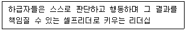
- 서번트 리더십
- 변혁적 리더십
- 슈퍼 리더십
- 지시적 리더십
(정답률: 48%)
58. 콜센터 성과평가에 관한 설명으로 옳지 않은 것은?
- 회사 전체의 목표, 성과체계와 긴밀히 연관되어 있다.
- 회사별 특성을 고려하기보다는 다른 콜센터의 평가 항목을 벤치마킹하여 적용하는 것이 좋다.
- 인바운드 콜센터에서 사용되는 성과 평가항목은 CPH(Call Per Hour), 서비스 레벨, 고객만족도 등으로 설정할 수 있다.
- 균형 있는 성과 평가를 위해서는 양적 평가 항목과 질적 평가 항목 모두 필요하다.
(정답률: 66%)
59. 인사선발도구 중 면접의 방식에 관한 설명으로 옳은 것은?
- 구조적 면접은 면접자에게 폭넓은 권한을 부여하여 특별한 형식 없이 면접자가 원하는 질문을 하는 방식이다.
- 순차적 면접은 여러 계층에 있는 관리자들이 피면접자를 면접하는 방식이다.
- 집단 면접은 다수의 면접자가 한 명의 피면접자에게 질문을 하면서 진행되는 방법이다.
- 스트레스 면접은 면접자에게 스트레스를 주어 스트레스 상황하에서 면접자의 반응을 살펴보면서 면접을 하는 방식이다.
(정답률: 27%)
60. 효과적인 교육방안이 아닌 것은?
- 실제작업 환경과 같은 교육환경
- OJT 교육 활성화
- 교육결과에 대한 피드백
- 교수자 지향적 교육
(정답률: 65%)
61. 콜센터에 대한 설명으로 틀린 것은?
- 콜센터는 기업과 고객 간에 정보통신수단을 통한 커뮤니케이션적인 접촉이 이루어지는 곳이다.
- 콜센터는 기업의 제품기획과 개발, 광고전략 수립, 행정업무 등이 이루어지는 곳이다.
- 콜센터는 크게 인바운드형 콜처리 업무와 아웃바운드형 콜처리 업무로 이루어진다.
- 텔레마케팅과 커뮤니케이션이 결합되어 전문상담이 이루어지는 고객지향적 조직이라고 볼 수 있다.
(정답률: 62%)
62. 콜센터 리더의 역할에 관한 설명으로 틀린 것은?
- 상담원의 업무성과를 높이기 위해서는 잘하는 점에 대한 칭찬보다는 잘못에 대한 호된 질책이 더 중요하다.
- 단순히 상담원의 부족한 면을 지적해 주는 것이 아니라 상담원이 그것을 넘어설 수 있도록 스킬을 가르쳐 주고 훈련시켜 주어야 한다.
- 상담원이 교육받은 내용대로 업무를 하지 않고 적절하지 않은 행동을 했다면 즉시 원인 파악을 해야 한다.
- 가장 좋은 코칭의 방법은 강압적인 자세로 대하지 말고 상담원 스스로 이해할 수 있도록 결론을 이끌어 주는 것이다.
(정답률: 62%)
63. 인적자원관리의 목적이 아닌 것은?
- 인재확보
- 인재육성
- 근로조건 정비
- 종업원의 경영참가 배제
(정답률: 64%)
64. 직무만족(Job satisfaction)에 관한 설명으로 옳은 것은?
- 직무만족은 다차원이 아닌 단일차원의 개념이다.
- 직무만족이란 개인이 직무나 직무경험에 대한 평가의 결과로 얻게 되는 즐겁고 긍정적인 느낌을 의미한다.
- 직무에 만족하면 반드시 생산성과 같은 양적 성과 가 높아진다.
- 조직원의 불만족이 높아지면 조직에 여러 가지 부정적 결과를 가져오며 불만족이 모두 행동으로 표출되어 사전에 파악할 수 있다.
(정답률: 54%)
65. 콜센터 상담원의 정성적인 평가 기준 마련 시, 고려해야 할 사항으로 거리가 가장 먼 것은?
- 정성적인 평가는 추상적이거나 모호하지 않게 구체 화한다.
- 너무 많은 항목은 콜센터 상담원의 역량을 분산시키므로 단순화한다.
- 업무분장에 맞는 상담원 개인의 역량지표를 제시하고 평가 기준을 마련한다.
- 상담원의 목표관리와 연결시켜 매출 기여도를 중요 하게 평가한다.
(정답률: 50%)
66. 다음 중 인적자원관리의 주체가 아닌 것은?
- 최고경영자
- 인사전담자
- 각 부서의 장
- 노동조합위원장
(정답률: 68%)
67. 브룸(Vroom)과 예튼(Yetton)의 의사결정 상황이 론과 관련된 설명 중 옳지 않은 것은?
- 상황변수로 의사결정의 중요성과 관련된 속성과 의사결정의 수용도와 관련된 속성들을 제시하였다.
- 리더십의 유형을 리더의 의사결정 형태에 따라 AⅠ, A Ⅱ, Ⅽ Ⅰ, Ⅽ Ⅱ의 4가지로 구분하였다.
- 각 상황별로 가장 적합한 리더십의 구분을 하지 못하였다는 한계점이 있다.
- 상황속성을 yes와 no의 2분법으로 구분하였다는 한계점이 있다.
(정답률: 26%)
68. 다음 중 보상을 통한 동기부여 방안으로 옳지 않은 것은?
- 급여 차등 지급
- 진급 우선 혜택
- 근태 불량자 중점 관리
- 유급 휴가 및 조기 퇴근 등 복무규정의 차등
(정답률: 66%)
69. 조직화의 원칙에 대한 설명 중 거리가 먼 것은?
- 비계층의 원칙
- 명령일원화의 원칙
- 목표단일성의 원칙
- 분업 및 전문화 원칙
(정답률: 56%)
70. 다음 중 훈련의 효과성 평가에 관한 설명으로 틀린 것은?
- 반응평가는 주로 훈련프로그램이 끝났을 때 강사의 평가로 이루어진다.
- 학습평가는 학습자의 학습 내용 숙지 여부를 평가하는 것이다.
- 적용평가를 통해 응용을 촉진 또는 방해하는 요인에 대한 규명이 이루어진다.
- ROI 평가를 통해 훈련 투자에 대한 수익에 대해 평가한다.
(정답률: 35%)
71. 막스 베버(Max Weber)가 주장한 이상적인 관료 조직(bureaucracy)의 특징을 올바르게 설명한 것은?
- 과업의 성과가 일정하도록 다양한 규칙이 있어야 한다.
- 경영자는 개인적인 방법과 생각으로 조직을 이끌어야 한다.
- 조직구성원의 채용과 승진은 경영자의 지식과 경험에 기초한다.
- 조직의 각 부서 관리는 해당 업무의 전문가에 의해 이루어져야 한다.
(정답률: 40%)
72. 성과측정을 위한 인터뷰 시 발생하는 오류 중 한 가지 측면에서 뒤떨어질 경우 나머지 모두를 나쁘게 평가하는 것을 무슨 효과라 하는가?
- horn effect
- halo effect
- contrast effect
- stereotype effect
(정답률: 28%)
73. 콜센터의 심리적 장애요인 중 소속감의 부재로 인하여 급여조건의 변동 또는 이점이 있으면 쉽게 근무지를 이동하여 높은 이직률이 나타나는 현상은?
- 유리벽
- 뜨내기 문화
- 끼리끼리 문화
- 콜센터 심리 공황
(정답률: 43%)
74. 텔레마케팅이 마케팅전략 수행의 중요한 도구로 대두된 요인으로 보기 어려운 것은?
- 소비자 니즈의 다양화
- 마케팅 개념의 변화
- 기업 간 경쟁 약화
- 정보처리기술의 발달
(정답률: 67%)
75. 콜센터 조직의 특성으로 거리가 먼 것은?
- 초기 조직적응이 중시되는 조직이다.
- 고객과 대면 접촉이 일반화된 조직이다.
- 아웃소싱 활용의 보편화로 인해 이직률이 높은 조직이다.
- 직업에 대한 만족감, 적극성, 고객응대 수준 등 상담원 개인 차이가 있는 조직이다.
(정답률: 55%)
4과목: 고객응대
76. 다음 ( )안에 들어갈 알맞은 것은?
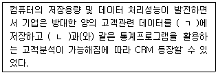
- ㄱ : 데이터웨어하우스, ㄴ : 데이터베이스
- ㄱ : 데이터마이닝, ㄴ : 데이터웨어하우스
- ㄱ : 데이터베이스, ㄴ : 데이터마이닝
- ㄱ : 데이터웨어하우스, ㄴ : 데이터마이닝
(정답률: 42%)
77. 소비자의 구매과정 중 구매 전 단계에서의 커뮤니케이션 목표와 거리가 가장 먼 것은?
- 구매위험의 감소
- 상표인지의 증대
- 반복구매행동의 증대
- 구매 가능성의 증대
(정답률: 40%)
78. 경어법에 대한 설명으로 옳지 않은 것은?
- 텔레마케터의 말은 그의 인격과 회사의 품격을 나타내므로 품위 있는 표현을 하도록 습관화한다.
- 합쇼체(높임말씨)와 해요체(반 높임말씨)의 비율을 4:6으로 하는 것이 적당하다.
- 경어에는 상대를 높이는 존경어와 자신을 상대방보다 낮추어 간접적으로 상대방을 높이는 겸양어가 있다.
- 사물 존칭은 고객에게 거부감을 줄 수 있어 주의가 필요하다.
(정답률: 58%)
79. 일반적인 고객 욕구에 대한 설명으로 옳지 않은 것은?
- 개인적으로 알아주고 관심과 정성이 담긴 서비스를 제공받기를 원한다.
- 소비자가 원할 때 적시에 서비스를 제공받기를 원한다.
- 책임당사자인 제3자에게 업무를 넘겨서 처리해 주기를 원한다.
- 자신의 문제에 대해 공감을 얻고 공정하게 처리되 기를 원한다.
(정답률: 68%)
80. 고객의 구체적 욕구를 알아내기 위한 질문기법으로 거리가 가장 먼 것은?
- 다양하고 방대한 양의 질문을 한다.
- 고객이 쉽게 이해할 수 있도록 질문한다.
- 가급적이면 긍정적으로 질문을 한다.
- 질문을 구체화, 명료화시킨다.
(정답률: 67%)
81. CRM을 위한 고객정보를 분류한 것 중 정보의 원천이 다른 것은?
- 접촉 데이터
- 조사, 분석 데이터
- 직접입수 데이터
- 제휴 데이터
(정답률: 12%)
82. 고객과의 관계 개선을 위한 방법 중 자기노출에 관한 설명으로 옳지 않은 것은?
- 자기노출이 증가하면 관계의 친밀감이 커진다.
- 자기노출은 상호적인 경향이 있다.
- 여성은 남성보다 자기노출을 잘하는 경향이 있다.
- 자기노출은 보상이 따를 때 감소한다.
(정답률: 58%)
83. CRM을 구현하기 위한 아웃바운드 텔레마케팅의 활용으로서 옳지 않은 것은?
- 우수고객에게 새로운 서비스를 홍보하기 위하여 전화를 한다.
- 고객의 불만 사항을 접수하고 원인을 분석한다.
- A/S 후 불편한 사항이 없는지 확인전화를 한다.
- 고객의 기념일에 사은품을 보내기 위해 고객정보를 확인하고자 전화를 한다.
(정답률: 61%)
84. 빅데이터 수집방법 중 웹로봇을 이용하여 조직 외부에 존재하는 소셜레이터 등 인터넷에 공개되어 있는 자료를 수집하는 것은?
- 크롤링(Crawling)
- 센싱(Sensing)
- 로그 수집기
- RSS
(정답률: 49%)
85. 다음 중 언어적 메시지에 해당하지 않는 것은?
- 서류
- 편지
- 음성
- 보고서
(정답률: 52%)
86. 감정노동 직업군 분류 중 간접대면에 해당하는 것은?
- 콜센터 상담원
- 마트 판매원
- 호텔 직원
- 골프장 경기보조원
(정답률: 65%)
87. 다음 중 빅데이터 처리의 순환 과정을 바르게 표현한 것은?
- 저장 추출 - 시각화 - 분석 - 예측 - 적용
- 저장 - 시각화 - 적용 - 추출 - 분석 - 예측
- 추출 - 저장 - 분석 시각화 예측 - 적용
- 추출 - 분석 - 예측 - 저장 - 시각화 적용
(정답률: 24%)
88. 다음 중 클레임을 처리하는 기본 원칙으로 바람직 하지 않은 것은?
- 고객의 입장에서 고객을 위한 방향으로 상담한다.
- 고객의 감정을 극대화시켜 전화를 먼저 끊게 한다.
- 고객의 입장에 대해 공감을 표시하여 불만스러운 마음을 풀어준다.
- 고객의 반말이나 높은 언성, 행동 등에 화를 내거나 개인적인 말을 하지 않는다.
(정답률: 63%)
89. CRM의 등장 배경이 되는 마케팅 패러다임의 변화로 틀린 것은?
- 생산자 중심에서 고객중심으로의 변화
- one-to-one 마케팅에서 mass 마케팅으로의 변화
- 양적 사고에서 질적 사고로의 변화
- 10인 1색에서 1인 10색으로의 변화
(정답률: 54%)
90. 다음 중 효과적인 대화 방법으로 거리가 먼 것은?
- 전문용어를 사용하여 전문성을 높이도록 한다.
- 상대와 장소를 고려하여 그에 맞는 존댓말을 쓴다.
- 애매한 표현, 위압감을 주는 표현은 사용하지 않는다.
- 비언어적 요소도 고려하여 대화한다.
(정답률: 66%)
91. 불만을 제기한 고객에 대한 응대 원칙이 아닌 것은?
- 우선 사과를 한다.
- 신속하게 해결을 한다.
- 불만 원인을 파악한다.
- 고객이 틀린 부분은 논쟁한다.
(정답률: 71%)
92. 조직 측면에서의 CRM 성공 요인에 해당되지 않는 것은?
- 최고경영자의 관심과 지원
- 고객 및 정보 지향적 기업문화
- 전문 인력 확보
- 데이터 통합수준
(정답률: 34%)
93. 다음은 무엇에 관한 설명인가?
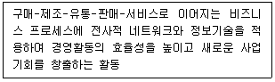
- Electronic Commerce
- OFF-Line Business
- B2B
- E-Business
(정답률: 51%)
94. 고객유형별 상담스킬에 대한 설명으로 옳지 않은 것은?
- 주도형 고객은 결과보다 과정을 중요시하는 만큼 과정에 대한 상세한 설명이 필요하다.
- 사교형 고객은 일의 심각성을 느낄 수 있도록 문제의 심각성에 대해 주의를 환기시켜 줄 필요가 있다.
- 온화형 고객은 의사결정을 주도적으로 하지 못하는 만큼 의사결정을 위한 촉진이 필요하다.
- 분석형 고객은 구체적인 데이터를 요구하는 만큼 정확한 정보제공이 필요하다.
(정답률: 22%)
95. CRM에 대한 설명으로 옳지 않은 것은?
- 고객 관계 관리를 의미한다.
- 고객 통합 DB를 구축하고 분석 · 활용한다.
- 고객지향적인 경영기법의 하나이다.
- 단기적인 신뢰구축에 의미를 부여한다.
(정답률: 64%)
96. 다음 중 의사소통의 장애요인이 아닌 것은?
- 지위의 현격
- 비공식 조직
- 언어상의 장애
- 시간상의 압박
(정답률: 41%)
97. 고객상담의 필요성이 증가하는 요인으로 거리가 먼 것은?
- 고객욕구의 복잡화와 다양화
- 소비자불만과 소비자피해의 양적 증가
- 소비자권리에 대한 소비자의식 향상
- 제품 공급부족 현상의 심화
(정답률: 68%)
98. 개인정보 노출방지대책 중 관리적 측면에 해당하지 않는 것은?
- 홈페이지 개인정보 노출 예방 관련 매뉴얼 수립
- 홈페이지 개인정보 노출 예방 교육 실시
- 업무용 파일 암호화 및 업로드 시 새 파일 작성
- 홈페이지 및 웹서버 취약점 점검
(정답률: 27%)
99. SAS사 얀 칼슨이 주장한 것으로 고객 접점의 중요 성을 뜻하는 용어는?
- CSP(Customer Situation Performance)
- MOT(Moment Of Truth)
- POCS(Point Of Customer Services)
- CRM(Customer Relationship Management)
(정답률: 47%)
100. 미래사회의 특징과 빅데이터의 역할이 바르게 짝지어진 것은?
- 불확실성 : 트랜드 분석을 통한 제품 경쟁력 확보
- 리스크 : 인간관계, 상관관계가 복잡한 컨버전스 분야의 데이터 분석으로 안정성 향상 및 시행착오 최소화
- 스마트 : 개인화, 지능화 서비스 제공 확대
- 융합 : 사회현상, 현실세계의 데이터를 기반으로 한 패턴 분석과 미래 전망
(정답률: 41%)